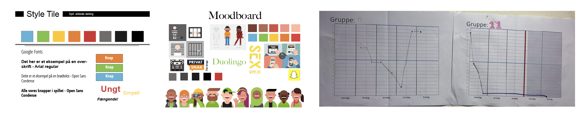

Animation
TEMA 1 - KORT OM TEMAET
I dette tema var opgaven at lave to interaktivt animeret spil. Den første del af opgaven var selvstændig og den anden del var gruppearbejde. Vi lærte at bruge Adobe illustrator til at designe al det grafiske, som er figur elementerne, baggrunde/skærme og UI - elementerne. Lydeffekterne producerede vi selv, ved at optage og derefter redigere lyden i Adobe Audition. Hele spillet er kodet i Brackets, det nye vi lærte i css var: position, keyframe, animationstag og sprite sheet. Java script, var det nye i kodning vi aldrig havde berørt før, det galt: function, variabel, Toggle, click, if else, score, classlist, eventListener med mere. Det var et krav at websiden skal responsiv. Alt designet i spillede skulle førsy skitseres i hånden, inden arbejdningen i Adobe illustrator kom. Det var vigtigt at skitsere mange forskellige skitser, af et element for eksempel spilleskærmen, det var for at blive presset til at tænke ud af boksen.
TRASH
Pitch spil-idé
Kend dit skrald, hvad kan genbruges, hvad kan ikke?
Hvis du kender sit skrald, er det nemlig muligt at genbruge en stor del af det! Reuse, reduse og recycle! Det have en super positiv effekt for miljøet.
Du er på en gå tur, en storm/vind vælter en stor skraldespand! Der er skrald 9-10 forskelligt stykker skrald. Spillet handler om at klikke på de skrald som kan genbruges.
Ting:
bananskrald,
plastisk flaske,
spist æble,
poser,
vin flaske,
avis,
sok,
ledning,
dåser
Trash spillet er et sjovt hurtigt spil! Spillet går ud på at samle det skrald som kan gen- bruges og fravælge det som IKKE kan.
Process
Figur design
Skitsering begyndte lige efter idé genering og pitching af Trash spillet. Vi lærte at når man skitsere behøver man ikke at være deltaljeret. Et godt tip er at: tegn med en løs hånd med mange hurtige streger. Der er mange måde at eksperimentere med skitsering på, det kan være gennem symmetrisk eller asymmetrisk, Bouba eller Kiki(bløde eller skarme former), former og appeal. Figurdesignet havde krav på at det ingen outline/stroke må være, det skulle tegnes i vektor, det var simple design vi skulle lave gennem shapes og der måtte ikke være teskturer. Efter skitseringen, valgte jeg at benytte en blanding af symmetrisk, asymmetrisk og bouba i min figur design.
Styletile
Jeg havde valgt at min stil-inspiration til mit spil skulle være spillet: Tap the Frog Faster, fordi jeg rigtig godt kan lide farve paletten de bruger, formerne synes jeg også passede ind til den bløde og søde stiludtryk, som jeg gerne vil have. Farverne jeg har brugt er kraftige og iøjenfaldende. Formen i figurdesignet er runde og derfor elsklig og kærlig. Det er gjort for at gør spillet sødt og venligt for alle i en bred aldersgruppe. Skraldespandens øjne er fremhævet for at give liv og sjovhed til en normal kedelig skraldespand. Jeg har prøvet at holde mig til de samme farver og bruge forskellige former for at tydeliggøre UI elementerne. Ved at få de præcise samme farmer, som 'Tap the frog faster' brugt jeg Adobe colour wheel. Typografi valgte jeg "Google Fonts: Dosis" til titelskærmen og til alle UI elementer har jeg brugt "American Typewriter". For at gå det bøjet look på fonten til titelskærmen brugt jeg: Effekt - Wrap - Bulge med Adobe Illustrator.
Spil struktur
Jeg udarbejdede et aktivitetsdiagrammet ud fra min idé. Spillet skulle kun tag 9 sek. og jeg tænkte det var et let spil og derfor skulle det være lidt udfordrene, så man skal have over 9 point for at vinde. Da jeg begyndte at kode og afprøve spillet af, fandt jeg hurtigt ud af det ville være alt for svært at vinde hvis jeg skulle følge mit aktvitetdiagram 100%, derfor ændrede jeg det til 10 sek. og have mindst 5 point for at vinde. Derudover har jeg også ændret ching lyden til i stedet yay lyd. Statemaschine diagram har jeg lavet for have en opskrift at følgelig i Javascript. Det var rigtig svært at have det overblik over kodning og så samtidig skulle inddrage det ind i et statemashine diagram var endnu svære. Javascript er for mig er rigtig svært at forstå, samtidig med jeg i forvejen har svært ved HTML og CSS, gjorde det, det ikke nemmere.

Sex og samfund
Billeddeling
Opgaven lød på at skulle udarbejde en spil til målgruppen 13-15 år. Temaet var billeddeling på nettet. Formåleret er at få unge til at tænke og sende dem videre til Privatsnak.
Gruppekontrakt
Kontrakten i denne grupppe havde de sædvandlige aftaleemner men blev enige om at have egne regler i gruppen og hvis de ikke blev overholdt første gang, skulle man komme med snacks og anden gang var der en advarsel plus snacks og tredje gang er man ude. Derudover havde også SCRUM møde, hver morgen inden vi begyndte dagen. Scrum master, tog vi på skift. Vi brugte Trello for første gang, jeg synes det er et mega fedt redskab, for at have overblik over forløbet.
Persona / målgruppe
Vi udarbejde to fiktive personaer, vi valgte at inddrage dem i forhold til målgruppen men også i vores spil, de var kernen i vores brainstorm. Vi skulle håndtere opgaven, som at det var os, som er afsenderen: Sex og Samfund. Vi har selv været i den alder men udviklingen og teknologien går hurtigt fremad. Så 13-15 årige i dag, er slet ikke som vi var dengang. Derfor skulle vi, forholde os til hvordan vi ser og kender 13-15 årige i dag, og ikke hvordan vi ville håndtere situationen, da vi selv var i den alder. Vi sad alle sammen og skitsede scener, UI elementer og grafiske spille elementer. Det vi gjorde var at side hver især og skitsere eksempelvis spilleskærmen, hvor efter vi præsenterede det for hinanden, også valgte vi ude hvad vi synes var godt. Det fedt at få hver gruppe medlem idé inkluderet, så det blev smeltede sammen til at blive én idé. Mit i skitsering og begyndelsen af design i Adobe Illustrator, fik vi vores idé, testet og vi lavede en 5 sec. test og en uformel interview. Efter testen og interviewet valgte vi arbejde videre fordi vi fik den respond vi ønskede.
Styletile
Eftersom målgruppen er unge, så ville vi gerne fange opmærksomhed med farvrige farver, men fordi det er en super alvorligt enme så blev vi enig om at sort, grå og hvid også skulle indgå fordi farverne afspejler seriøstitet.
Moodboard
Flat design og Duolingo var vores stil inspiration. Vi valgte holde os til de rigtige hudfarver fordi vi gerne ville have, at det skulle have den virklige effekt af rigtige mennesker, at det ikke er en fiktiv karakter, men derimod en person de kan afspejle sig i.
Fernisering
Hele processen endte med en fernisering, hvor en til to 8. klasser kom på besøg og testede hvor spillet af. Det var fedt at få spillet prøvet af målgruppen, det var meget forskelligt hvordan, hver enkelt reagerede, en feedback vi fik af mange, var at spillet er meget hurtigt, at der ikke er nok runder, men overordnet positivt oplevelse.
Reflektioner
Teamet har været tværfagligt af design og kodning. Javascript blev introduceret med fokus på at animere et spil. I CSS lærte jeg nye tags, som positionering, animation, sprite sheet og keyframes. Jeg blev positivt overrasket over, alle de muligheder shapes havde at byde på, fra at sketche sine ideer, til at have det færdige resultat var fedt. I Gruppearbejde lærte vi at bruge Trello, Scrum, Burndown Chart og gruppekonkrakt, som vi senere kan benytte os af. I projektet Sex og Samfund, lærte jeg at målgruppen er en super vigtig del. Målgruppen var blev inddraget i hele processen. Spillets idé var dannet ud fra målgruppen. Målgruppen testede spillet midt i processen og helt til sidst i ferniseringen.